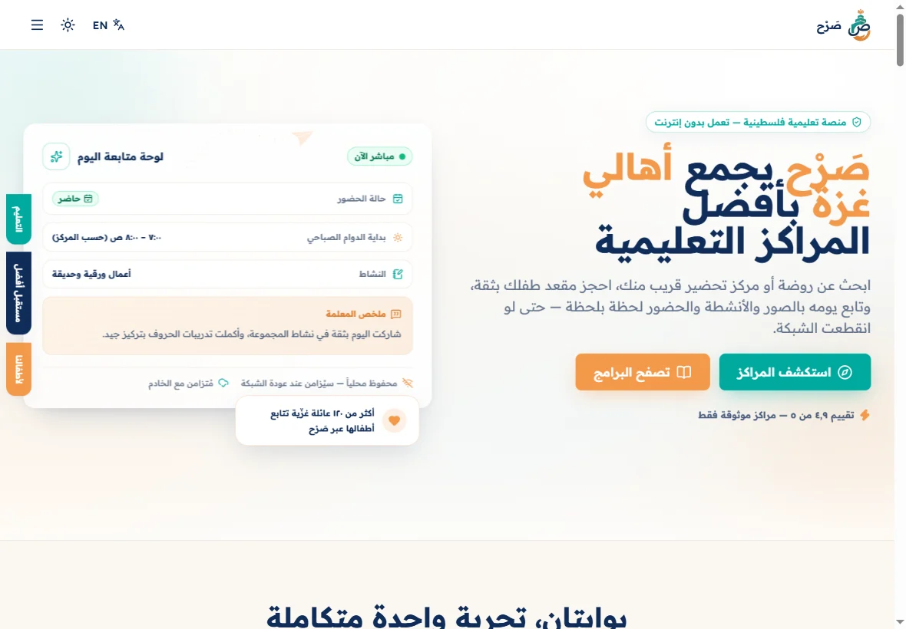
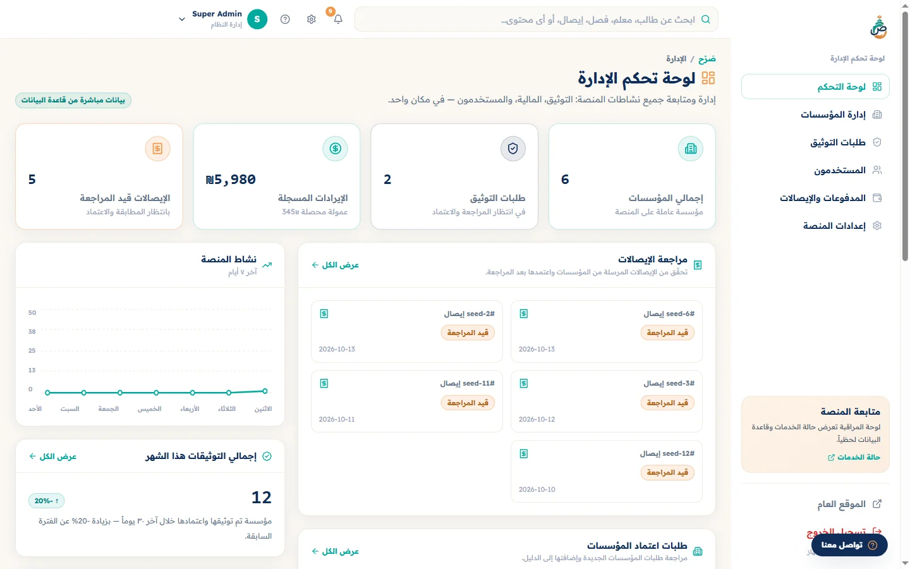
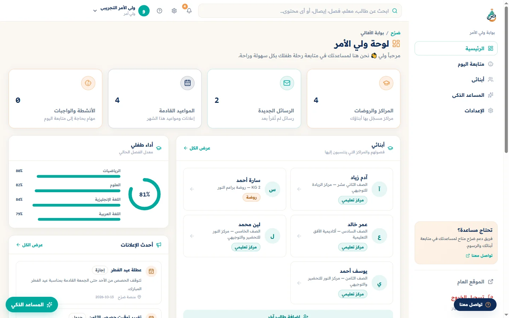
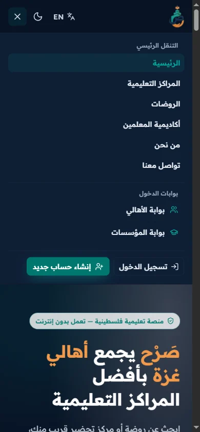

Portfolio project · Arabic-first RTL
Sarh صرح
Making a dense educational directory easier to search, filter, and understand across public and portal views.

Product context
Sarh is an educational institution directory and management platform covering centers, kindergartens, tutoring services, and Tawjihi-related services. It is not an online course marketplace.
The design problem is information density: families need a useful path through categories, locations, educational stages, and service details, while portal users need structured management views.
Interface evidence
These are genuine captures from the running application. Names, centers, children, receipts, and similar records are fictional seed data used for development.




Design decisions
Search is the primary directory action
The public directory gives search visual priority, then places category, location, stage, rating, and price controls within the same discovery region.
Filtering and sorting answer different questions
Filters narrow the result set while sorting changes its order. Keeping those controls distinct helps preserve their meaning in a complex directory.
RTL shapes the whole composition
Navigation, form alignment, cards, dashboards, and the mobile drawer are structured for Arabic reading rather than translated as an afterthought.
Implementation
The application uses Next.js 14, React 18, TypeScript, Tailwind CSS, Prisma, and PostgreSQL. The repository also contains a separate Python/FastAPI AI service.
Implemented public-directory behavior includes search, filters, sorting, and pagination. The same product extends into role-specific portal views, with different levels of completeness.
- Next.js 14
- React 18
- TypeScript
- Tailwind CSS
- Prisma
- PostgreSQL
- FastAPI service
Current status
Sarh is under active development and no public live demo is claimed. Some portal dashboards rely on demo or seeded data.
- The enrollment interface and validation exist, but the enrollment API route is incomplete and submissions do not persist.
- Planned or partial features are not presented as completed product capabilities.
- No adoption, user-research, or usability-testing outcomes are claimed in this case study.
Complete enrollment persistence, continue verifying portal workflows, and keep the repository’s feature-status documentation aligned with observable behavior.